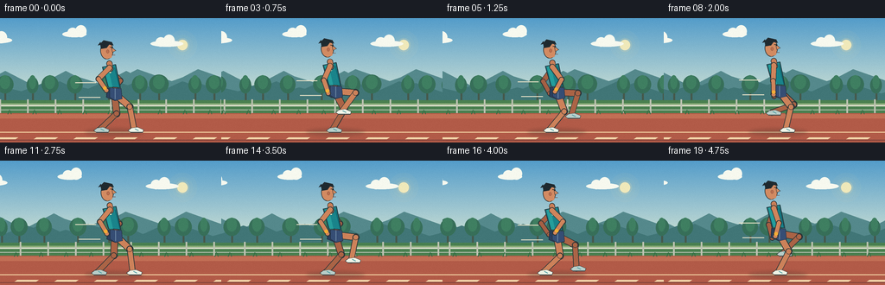
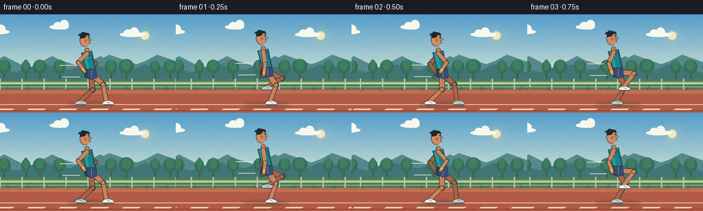

CODING AGENTS AS PIXEL WORLD MODELS
traex/GPT-5.6-Sol · instance_preservation_0032
点击播放 · 原生 RGB 像素
逐轮保存的候选
回放视频、检查图与代码变化。
每份候选均可单独播放。实际图片检查记录在下方工具轨迹中。
候选 01播放与检查图
点击播放 · 原生 RGB 像素


展开代码变化
--- 上一保存版本
+++ 本次保存版本
@@ -0,0 +1,277 @@
+from pathlib import Path
+import json, math
+import numpy as np
+from PIL import Image, ImageDraw, ImageFilter
+import artifact_io
+
+CASE = Path(__file__).resolve().parent
+SPEC = json.loads((CASE / "task_spec.json").read_text())
+W, H = SPEC["width"], SPEC["height"]
+N, FPS = SPEC["frames"], float(SPEC["fps"])
+S = 4
+rng = np.random.default_rng(20261110)
+
+
+def scp(p):
+ return tuple(int(round(v*S)) for v in p)
+
+def ellipse(d, box, fill, outline=None, width=1):
+ d.ellipse(scp(box), fill=fill, outline=outline, width=max(1,int(width*S)))
+
+def polygon(d, pts, fill, outline=None, width=1):
+ pts2=[scp(p) for p in pts]
+ d.polygon(pts2, fill=fill)
+ if outline:
+ d.line(pts2+[pts2[0]], fill=outline, width=max(1,int(width*S)), joint="curve")
+
+def line(d, pts, fill, width=1, joint="curve"):
+ d.line([scp(p) for p in pts], fill=fill, width=max(1,int(width*S)), joint=joint)
+
+def capsule(d, p1, p2, width, fill, outline=None, ow=1):
+ if outline:
+ line(d,[p1,p2],outline,width+2*ow)
+ r=(width+2*ow)/2
+ ellipse(d,(p1[0]-r,p1[1]-r,p1[0]+r,p1[1]+r),outline)
+ ellipse(d,(p2[0]-r,p2[1]-r,p2[0]+r,p2[1]+r),outline)
+ line(d,[p1,p2],fill,width)
+ r=width/2
+ ellipse(d,(p1[0]-r,p1[1]-r,p1[0]+r,p1[1]+r),fill)
+ ellipse(d,(p2[0]-r,p2[1]-r,p2[0]+r,p2[1]+r),fill)
+
+def lerp(a,b,t): return a+(b-a)*t
+
+def smooth(t): return t*t*(3-2*t)
+
+# Stable background object layouts.
+clouds=[(-20,22,34),(72,15,28),(174,26,38),(282,12,32)]
+far_trees=[(i*31 + int(rng.integers(-8,9)), int(rng.integers(8,16))) for i in range(13)]
+near_trees=[(i*53 + int(rng.integers(-10,11)), int(rng.integers(15,23))) for i in range(8)]
+
+
+def shifted_positions(base, offset, period):
+ x=(base-offset)%period
+ if x>W+30: x-=period
+ return x
+
+
+def background(t):
+ # Supersampled atmospheric gradient.
+ hh,ww=H*S,W*S
+ arr=np.zeros((hh,ww,3),dtype=np.uint8)
+ top=np.array([84,157,202],float); mid=np.array([186,214,211],float); low=np.array([250,200,147],float)
+ for yy in range(hh):
+ y=yy/S
+ if y<76: c=top+(mid-top)*(y/76)
+ else: c=mid+(low-mid)*min(1,(y-76)/45)
+ arr[yy,:,]=np.clip(c,0,255)
+ im=Image.fromarray(arr,"RGB")
+ d=ImageDraw.Draw(im)
+ # Sun and glow, fixed in far distance.
+ glow=Image.new("RGBA",im.size,(0,0,0,0)); gd=ImageDraw.Draw(glow)
+ for r,a in [(17,10),(12,18),(8,55)]:
+ ellipse(gd,(211-r,31-r,211+r,31+r),(255,225,153,a))
+ ellipse(gd,(205,25,217,37),(255,240,184,225))
+ im=Image.alpha_composite(im.convert("RGBA"),glow)
+ d=ImageDraw.Draw(im)
+ # Clouds move almost imperceptibly.
+ for bx,by,bw in clouds:
+ x=shifted_positions(bx, t*2.0, 340)
+ col=(247,249,239,145)
+ ellipse(d,(x,by,x+bw,by+7),col)
+ ellipse(d,(x+6,by-4,x+18,by+7),col)
+ ellipse(d,(x+15,by-7,x+28,by+7),col)
+ # layered distant hills
+ off=t*5
+ pts=[(-30,86),(10,70),(42,79),(76,61),(111,79),(151,65),(193,78),(229,59),(286,79),(286,105),(-30,105)]
+ pts=[(x-off%35,y) for x,y in pts]
+ # retain full coverage by drawing shifted copies
+ for sh in (-70,0,70): polygon(d,[(x+sh,y) for x,y in pts],(85,137,140,255))
+ pts2=[(-30,91),(5,80),(35,87),(69,73),(103,89),(140,75),(178,88),(211,73),(258,89),(300,78),(300,106),(-30,106)]
+ for sh in (-90,0,90): polygon(d,[(x+sh-(off*1.4)%45,y) for x,y in pts2],(65,118,119,255))
+ # Far tree canopy parallax.
+ faroff=t*13
+ for base,r in far_trees:
+ x=shifted_positions(base,faroff,400)
+ trunk=(x,80,x+2,102)
+ polygon(d,[(x,101),(x+2,101),(x+2,80),(x,80)],(70,89,75,255))
+ ellipse(d,(x-r*.7,72-r*.45,x+r*.8,87),(55,111,89,255))
+ ellipse(d,(x-r*.4,66,x+r*.5,82),(63,127,97,255))
+ # Grass verge.
+ polygon(d,[(-5,95),(W+5,95),(W+5,113),(-5,113)],(74,128,80,255))
+ line(d,[(-5,99),(W+5,99)],(165,190,137,255),1)
+ # Fence scroll.
+ fenceoff=(t*38)%32
+ line(d,[(-5,101),(W+5,101)],(218,221,200,255),2)
+ line(d,[(-5,106),(W+5,106)],(179,190,174,255),1)
+ for x in np.arange(-32, W+40, 32):
+ xx=x-fenceoff
+ line(d,[(xx,94),(xx,111)],(190,195,178,255),2)
+ # Track, with subtle horizontal bands.
+ polygon(d,[(-5,110),(W+5,110),(W+5,H+5),(-5,H+5)],(178,91,72,255))
+ polygon(d,[(-5,111),(W+5,111),(W+5,116),(-5,116)],(194,111,85,255))
+ line(d,[(-5,132),(W+5,132)],(236,195,151,215),1.25)
+ line(d,[(-5,141),(W+5,141)],(126,66,59,150),1)
+ # Moving lane dashes give strong forward motion.
+ dashoff=(t*75)%46
+ for x in np.arange(-50,W+50,46):
+ xx=x-dashoff
+ polygon(d,[(xx,138),(xx+25,138),(xx+22,140),(xx-3,140)],(242,214,170,220))
+ # Occasional grass blades behind runner.
+ bladeoff=(t*50)%29
+ for x in np.arange(-20,W+30,29):
+ xx=x-bladeoff
+ line(d,[(xx,111),(xx+2,106)],(53,110,69,220),1)
+ line(d,[(xx+4,111),(xx+3,107)],(53,110,69,180),1)
+ return im
+
+
+def ik_knee(hip, foot, l1=24.0, l2=27.0):
+ hx,hy=hip; fx,fy=foot
+ dx,dy=fx-hx,fy-hy
+ dist=max(1e-5,min(math.hypot(dx,dy),l1+l2-0.05))
+ ux,uy=dx/dist,dy/dist
+ a=(l1*l1-l2*l2+dist*dist)/(2*dist)
+ h=math.sqrt(max(0,l1*l1-a*a))
+ px,py=hx+a*ux,hy+a*uy
+ # max-x branch gives the characteristic forward-bending running knee.
+ c1=(px-h*uy,py+h*ux); c2=(px+h*uy,py-h*ux)
+ return c1 if c1[0]>=c2[0] else c2
+
+
+def foot_cycle(u, ground=129):
+ # Grounded power phase followed by a high, compact recovery phase.
+ if u < .60:
+ q=u/.60
+ return 23-43*smooth(q), ground
+ q=(u-.60)/.40
+ return -20+43*smooth(q), ground-22*(math.sin(math.pi*q)**0.86)
+
+
+def arm_points(shoulder,u):
+ # Same-side arm opposes its leg. Elbow stays flexed near 90 degrees.
+ theta=-0.78*math.cos(2*math.pi*u)
+ sx,sy=shoulder
+ elbow=(sx+18*math.sin(theta),sy+18*math.cos(theta))
+ fore=-0.78*theta
+ hand=(elbow[0]+16*math.sin(fore), elbow[1]+16*math.cos(fore))
+ return elbow,hand
+
+
+def draw_leg(d, hip, foot, far=False):
+ knee=ik_knee(hip,foot)
+ outline=(43,53,56,255)
+ skin=(171,100,70,255) if far else (205,130,90,255)
+ # thigh has shorts overlapping at hip
+ capsule(d,hip,knee,7.0,skin,outline,0.8)
+ capsule(d,knee,foot,5.7,skin,outline,0.75)
+ ellipse(d,(knee[0]-3.2,knee[1]-3.2,knee[0]+3.2,knee[1]+3.2),skin,outline,0.6)
+ # low-cut white running shoe points forward
+ fx,fy=foot
+ shoe=(185,207,202,255) if far else (240,244,231,255)
+ sole=(62,73,75,255)
+ polygon(d,[(fx-3,fy-2),(fx+4,fy-3),(fx+11,fy),(fx+10,fy+3),(fx-4,fy+3),(fx-7,fy+1)],shoe,outline,.65)
+ line(d,[(fx-4,fy+3),(fx+10,fy+3)],sole,1)
+ line(d,[(fx+1,fy-1),(fx+5,fy+1)],(79,160,164,255),1)
+ return knee
+
+
+def draw_arm(d, shoulder, u, far=False):
+ elbow,hand=arm_points(shoulder,u)
+ outline=(43,53,56,255)
+ skin=(166,96,68,255) if far else (208,133,92,255)
+ capsule(d,shoulder,elbow,5.5,skin,outline,.7)
+ capsule(d,elbow,hand,4.7,skin,outline,.65)
+ ellipse(d,(hand[0]-2.7,hand[1]-2.5,hand[0]+2.7,hand[1]+2.5),skin,outline,.6)
+ return elbow,hand
+
+
+def draw_runner(im,t):
+ d=ImageDraw.Draw(im)
+ phase=(t*1.12)%1.0
+ # two vertical impulses per stride cycle; tiny fore-aft drift stays camera-tracked
+ bounce=1.5*math.cos(4*math.pi*phase)
+ rootx=132+0.8*math.sin(2*math.pi*phase)
+ hip=(rootx,85+bounce)
+ shoulder=(rootx-6.5,56+bounce)
+ ground=129
+ near_u=phase
+ far_u=(phase+.5)%1.0
+ nrel=foot_cycle(near_u,ground); frel=foot_cycle(far_u,ground)
+ nfoot=(hip[0]+nrel[0],nrel[1]); ffoot=(hip[0]+frel[0],frel[1])
+ # Soft contact shadow, slightly changing with airborne compactness.
+ shadow=Image.new("RGBA",im.size,(0,0,0,0)); sd=ImageDraw.Draw(shadow)
+ ellipse(sd,(98,128,166,136),(46,47,40,52))
+ shadow=shadow.filter(ImageFilter.GaussianBlur(2*S))
+ im.alpha_composite(shadow)
+ d=ImageDraw.Draw(im)
+ # faint trailing speed accents, behind the body
+ line(d,[(87,73+bounce),(111,73+bounce)],(235,228,201,50),1)
+ line(d,[(91,90+bounce),(116,90+bounce)],(235,228,201,35),1)
+ # far-side limbs first
+ draw_leg(d,hip,ffoot,True)
+ far_sh=(shoulder[0]+1,shoulder[1]+2)
+ draw_arm(d,far_sh,far_u,True)
+ # Shorts rear mass, covering leg tops.
+ polygon(d,[(hip[0]-8,hip[1]-6),(hip[0]+8,hip[1]-5),(hip[0]+9,hip[1]+7),
+ (hip[0]+1,hip[1]+9),(hip[0]-9,hip[1]+5)],(44,63,93,255),(34,45,59,255),.8)
+ # Leaning torso with narrow waist and shoulder silhouette.
+ neck=(shoulder[0]+1,shoulder[1]-6)
+ torso=[(shoulder[0]-7,shoulder[1]-1),(shoulder[0]+8,shoulder[1]-4),
+ (hip[0]+7,hip[1]-6),(hip[0]-7,hip[1]-7)]
+ polygon(d,torso,(26,132,139,255),(34,55,62,255),1)
+ # vest highlights and seam preserve clothing identity
+ polygon(d,[(shoulder[0]-5,shoulder[1]),(shoulder[0]-1,shoulder[1]-2),
+ (hip[0]-2,hip[1]-7),(hip[0]-6,hip[1]-7)],(38,158,156,255))
+ line(d,[(shoulder[0]+7,shoulder[1]),(hip[0]+6,hip[1]-7)],(12,100,111,255),1)
+ # small fixed chest logo
+ ellipse(d,(shoulder[0]+1,shoulder[1]+4,shoulder[0]+3,shoulder[1]+6),(235,226,184,255))
+ # Neck
+ capsule(d,(neck[0],neck[1]+1),(neck[0]+1,neck[1]+7),5.5,(202,126,87,255),(43,53,56,255),.7)
+ # Head, always the same side-profile identity.
+ hc=(shoulder[0]-1.5,36+bounce)
+ skin=(211,139,98,255); edge=(43,53,56,255)
+ ellipse(d,(hc[0]-8,hc[1]-10,hc[0]+7,hc[1]+10),skin,edge,.8)
+ # nose and jaw contour, facing right
+ polygon(d,[(hc[0]+5,hc[1]-4),(hc[0]+10,hc[1]),(hc[0]+6,hc[1]+2)],skin,edge,.65)
+ polygon(d,[(hc[0]+6,hc[1]+2),(hc[0]+5,hc[1]+8),(hc[0]-1,hc[1]+10)],skin)
+ # close-cropped dark hair with a distinct swept crest
+ polygon(d,[(hc[0]-7,hc[1]-2),(hc[0]-8,hc[1]-8),(hc[0]-4,hc[1]-12),
+ (hc[0]+5,hc[1]-10),(hc[0]+7,hc[1]-6),(hc[0]+2,hc[1]-7),
+ (hc[0]-1,hc[1]-3)],(31,42,48,255),edge,.7)
+ polygon(d,[(hc[0]-7,hc[1]-7),(hc[0]-11,hc[1]-6),(hc[0]-8,hc[1]-10)],(31,42,48,255))
+ # ear, eye, brow, determined expression
+ ellipse(d,(hc[0]-1,hc[1]-1,hc[0]+2,hc[1]+3),(190,111,79,255),(90,58,48,255),.4)
+ line(d,[(hc[0]+3,hc[1]-4),(hc[0]+6,hc[1]-4)],(49,50,48,255),.8)
+ ellipse(d,(hc[0]+5,hc[1]-3.8,hc[0]+6.1,hc[1]-2.7),(30,34,35,255))
+ line(d,[(hc[0]+6,hc[1]+5),(hc[0]+9,hc[1]+5)],(116,66,57,255),.55)
+ # near leg and arm on top for readable cyclic occlusion
+ draw_leg(d,hip,nfoot,False)
+ # Near shorts panel over thigh.
+ polygon(d,[(hip[0]-5,hip[1]-6),(hip[0]+8,hip[1]-5),(hip[0]+9,hip[1]+7),
+ (hip[0]+1,hip[1]+9),(hip[0]-5,hip[1]+5)],(54,78,117,255),(34,45,59,255),.7)
+ line(d,[(hip[0]+1,hip[1]-5),(hip[0]+1,hip[1]+7)],(105,133,161,255),1)
+ draw_arm(d,(shoulder[0]+1,shoulder[1]),near_u,False)
+ # wrist fitness band remains on this person in all frames
+ _,hand=arm_points((shoulder[0]+1,shoulder[1]),near_u)
+ # locate band just before hand
+ elbow,_=arm_points((shoulder[0]+1,shoulder[1]),near_u)
+ vx,vy=hand[0]-elbow[0],hand[1]-elbow[1]
+ L=max(1,math.hypot(vx,vy)); bx,by=hand[0]-3*vx/L,hand[1]-3*vy/L
+ ellipse(d,(bx-2.1,by-2.1,bx+2.1,by+2.1),(244,174,54,255))
+ return im
+
+
+def make_frame(i):
+ t=i/FPS
+ im=background(t)
+ im=draw_runner(im,t)
+ # downsample provides polished antialiasing; add restrained film texture.
+ im=im.convert("RGB").resize((W,H),Image.Resampling.LANCZOS)
+ a=np.asarray(im).astype(np.int16)
+ noise=rng.normal(0,0.7,a.shape[:2])[:,:,None]
+ a=np.clip(a+noise,0,255).astype(np.uint8)
+ return a
+
+frames=np.stack([make_frame(i) for i in range(N)],axis=0)
+artifact_io.save(frames,CASE)
+print(f"saved {frames.shape} {frames.dtype} to {CASE}")
可观测工具轨迹
实际执行的命令与返回图片。
命令 1exit 0
/bin/bash -lc "cat prompt.txt && printf '\\n--- GENERATION_RULES.md ---\\n' && cat GENERATION_RULES.md"
命令 2exit 0
/bin/bash -lc "cat task_spec.json && printf '\\n--- FILES ---\\n' && find . -maxdepth 2 -type f -printf '%p\\n' | sort"
命令 3exit 0
/bin/bash -lc 'cat artifact_io.py'
命令 4exit 0
/bin/bash -lc "cat > generate.py <<'PY'
from pathlib import Path
import json, math
import numpy as np
from PIL import Image, ImageDraw, ImageFilter
import artifact_io
CASE = Path(__file__).resolve().parent
SPEC = json.loads((CASE / \"task_spec.json\").read_text())
W, H = SPEC[\"width\"], SPEC[\"height\"]
N, FPS = SPEC[\"frames\"], float(SPEC[\"fps\"])
S = 4
rng = np.random.default_rng(20261110)
def scp(p):
return tuple(int(round(v*S)) for v in p)
def ellipse(d, box, fill, outline=None, width=1):
d.ellipse(scp(box), fill=fill, outline=outline, width=max(1,int(width*S)))
def polygon(d, pts, fill, outline=None, width=1):
pts2=[scp(p) for p in pts]
d.polygon(pts2, fill=fill)
if outline:
d.line(pts2+[pts2[0]], fill=outline, width=max(1,int(width*S)), joint=\"curve\")
def line(d, pts, fill, width=1, joint=\"curve\"):
d.line([scp(p) for p in pts], fill=fill, width=max(1,int(width*S)), joint=joint)
def capsule(d, p1, p2, width, fill, outline=None, ow=1):
if outline:
line(d,[p1,p2],outline,width+2*ow)
r=(width+2*ow)/2
ellipse(d,(p1[0]-r,p1[1]-r,p1[0]+r,p1[1]+r),outline)
ellipse(d,(p2[0]-r,p2[1]-r,p2[0]+r,p2[1]+r),outline)
line(d,[p1,p2],fill,width)
r=width/2
ellipse(d,(p1[0]-r,p1[1]-r,p1[0]+r,p1[1]+r),fill)
ellipse(d,(p2[0]-r,p2[1]-r,p2[0]+r,p2[1]+r),fill)
def lerp(a,b,t): return a+(b-a)*t
def smooth(t): return t*t*(3-2*t)
# Stable background object layouts.
clouds=[(-20,22,34),(72,15,28),(174,26,38),(282,12,32)]
far_trees=[(i*31 + int(rng.integers(-8,9)), int(rng.integers(8,16))) for i in range(13)]
near_trees=[(i*53 + int(rng.integers(-10,11)), int(rng.integers(15,23))) for i in range(8)]
def shifted_positions(base, offset, period):
x=(base-offset)%period
if x>W+30: x-=period
return x
def background(t):
# Supersampled atmospheric gradient.
hh,ww=H*S,W*S
arr=np.zeros((hh,ww,3),dtype=np.uint8)
top=np.array([84,157,202],float); mid=np.array([186,214,211],float); low=np.array([250,200,147],float)
for yy in range(hh):
y=yy/S
if y<76: c=top+(mid-top)*(y/76)
else: c=mid+(low-mid)*min(1,(y-76)/45)
arr[yy,:,]=np.clip(c,0,255)
im=Image.fromarray(arr,\"RGB\")
d=ImageDraw.Draw(im)
# Sun and glow, fixed in far distance.
glow=Image.new(\"RGBA\",im.size,(0,0,0,0)); gd=ImageDraw.Draw(glow)
for r,a in [(17,10),(12,18),(8,55)]:
ellipse(gd,(211-r,31-r,211+r,31+r),(255,225,153,a))
ellipse(gd,(205,25,217,37),(255,240,184,225))
im=Image.alpha_composite(im.convert(\"RGBA\"),glow)
d=ImageDraw.Draw(im)
# Clouds move almost imperceptibly.
for bx,by,bw in clouds:
x=shifted_positions(bx, t*2.0, 340)
col=(247,249,239,145)
ellipse(d,(x,by,x+bw,by+7),col)
ellipse(d,(x+6,by-4,x+18,by+7),col)
ellipse(d,(x+15,by-7,x+28,by+7),col)
# layered distant hills
off=t*5
pts=[(-30,86),(10,70),(42,79),(76,61),(111,79),(151,65),(193,78),(229,59),(286,79),(286,105),(-30,105)]
pts=[(x-off%35,y) for x,y in pts]
# retain full coverage by drawing shifted copies
for sh in (-70,0,70): polygon(d,[(x+sh,y) for x,y in pts],(85,137,140,255))
pts2=[(-30,91),(5,80),(35,87),(69,73),(103,89),(140,75),(178,88),(211,73),(258,89),(300,78),(300,106),(-30,106)]
for sh in (-90,0,90): polygon(d,[(x+sh-(off*1.4)%45,y) for x,y in pts2],(65,118,119,255))
# Far tree canopy parallax.
faroff=t*13
for base,r in far_trees:
x=shifted_positions(base,faroff,400)
trunk=(x,80,x+2,102)
polygon(d,[(x,101),(x+2,101),(x+2,80),(x,80)],(70,89,75,255))
ellipse(d,(x-r*.7,72-r*.45,x+r*.8,87),(55,111,89,255))
ellipse(d,(x-r*.4,66,x+r*.5,82),(63,127,97,255))
# Grass verge.
polygon(d,[(-5,95),(W+5,95),(W+5,113),(-5,113)],(74,128,80,255))
line(d,[(-5,99),(W+5,99)],(165,190,137,255),1)
# Fence scroll.
fenceoff=(t*38)%32
line(d,[(-5,101),(W+5,101)],(218,221,200,255),2)
line(d,[(-5,106),(W+5,106)],(179,190,174,255),1)
for x in np.arange(-32, W+40, 32):
xx=x-fenceoff
line(d,[(xx,94),(xx,111)],(190,195,178,255),2)
# Track, with subtle horizontal bands.
polygon(d,[(-5,110),(W+5,110),(W+5,H+5),(-5,H+5)],(178,91,72,255))
polygon(d,[(-5,111),(W+5,111),(W+5,116),(-5,116)],(194,111,85,255))
line(d,[(-5,132),(W+5,132)],(236,195,151,215),1.25)
line(d,[(-5,141),(W+5,141)],(126,66,59,150),1)
# Moving lane dashes give strong forward motion.
dashoff=(t*75)%46
for x in np.arange(-50,W+50,46):
xx=x-dashoff
polygon(d,[(xx,138),(xx+25,138),(xx+22,140),(xx-3,140)],(242,214,170,220))
# Occasional grass blades behind runner.
bladeoff=(t*50)%29
for x in np.arange(-20,W+30,29):
xx=x-bladeoff
line(d,[(xx,111),(xx+2,106)],(53,110,69,220),1)
line(d,[(xx+4,111),(xx+3,107)],(53,110,69,180),1)
return im
def ik_knee(hip, foot, l1=24.0, l2=27.0):
hx,hy=hip; fx,fy=foot
dx,dy=fx-hx,fy-hy
dist=max(1e-5,min(math.hypot(dx,dy),l1+l2-0.05))
ux,uy=dx/dist,dy/dist
a=(l1*l1-l2*l2+dist*dist)/(2*dist)
h=math.sqrt(max(0,l1*l1-a*a))
px,py=hx+a*ux,hy+a*uy
# max-x branch gives the characteristic forward-bending running knee.
c1=(px-h*uy,py+h*ux); c2=(px+h*uy,py-h*ux)
return c1 if c1[0]>=c2[0] else c2
def foot_cycle(u, ground=129):
# Grounded power phase followed by a high, compact recovery phase.
if u < .60:
q=u/.60
return 23-43*smooth(q), ground
q=(u-.60)/.40
return -20+43*smooth(q), ground-22*(math.sin(math.pi*q)**0.86)
def arm_points(shoulder,u):
# Same-side arm opposes its leg. Elbow stays flexed near 90 degrees.
theta=-0.78*math.cos(2*math.pi*u)
sx,sy=shoulder
elbow=(sx+18*math.sin(theta),sy+18*math.cos(theta))
fore=-0.78*theta
hand=(elbow[0]+16*math.sin(fore), elbow[1]+16*math.cos(fore))
return elbow,hand
def draw_leg(d, hip, foot, far=False):
knee=ik_knee(hip,foot)
outline=(43,53,56,255)
skin=(171,100,70,255) if far else (205,130,90,255)
# thigh has shorts overlapping at hip
capsule(d,hip,knee,7.0,skin,outline,0.8)
capsule(d,knee,foot,5.7,skin,outline,0.75)
ellipse(d,(knee[0]-3.2,knee[1]-3.2,knee[0]+3.2,knee[1]+3.2),skin,outline,0.6)
# low-cut white running shoe points forward
fx,fy=foot
shoe=(185,207,202,255) if far else (240,244,231,255)
sole=(62,73,75,255)
polygon(d,[(fx-3,fy-2),(fx+4,fy-3),(fx+11,fy),(fx+10,fy+3),(fx-4,fy+3),(fx-7,fy+1)],shoe,outline,.65)
line(d,[(fx-4,fy+3),(fx+10,fy+3)],sole,1)
line(d,[(fx+1,fy-1),(fx+5,fy+1)],(79,160,164,255),1)
return knee
def draw_arm(d, shoulder, u, far=False):
elbow,hand=arm_points(shoulder,u)
outline=(43,53,56,255)
skin=(166,96,68,255) if far else (208,133,92,255)
capsule(d,shoulder,elbow,5.5,skin,outline,.7)
capsule(d,elbow,hand,4.7,skin,outline,.65)
ellipse(d,(hand[0]-2.7,hand[1]-2.5,hand[0]+2.7,hand[1]+2.5),skin,outline,.6)
return elbow,hand
def draw_runner(im,t):
d=ImageDraw.Draw(im)
phase=(t*1.12)%1.0
# two vertical impulses per stride cycle; tiny fore-aft drift stays camera-tracked
bounce=1.5*math.cos(4*math.pi*phase)
rootx=132+0.8*math.sin(2*math.pi*phase)
hip=(rootx,85+bounce)
shoulder=(rootx-6.5,56+bounce)
ground=129
near_u=phase
far_u=(phase+.5)%1.0
nrel=foot_cycle(near_u,ground); frel=foot_cycle(far_u,ground)
nfoot=(hip[0]+nrel[0],nrel[1]); ffoot=(hip[0]+frel[0],frel[1])
# Soft contact shadow, slightly changing with airborne compactness.
shadow=Image.new(\"RGBA\",im.size,(0,0,0,0)); sd=ImageDraw.Draw(shadow)
ellipse(sd,(98,128,166,136),(46,47,40,52))
shadow=shadow.filter(ImageFilter.GaussianBlur(2*S))
im.alpha_composite(shadow)
d=ImageDraw.Draw(im)
# faint trailing speed accents, behind the body
line(d,[(87,73+bounce),(111,73+bounce)],(235,228,201,50),1)
line(d,[(91,90+bounce),(116,90+bounce)],(235,228,201,35),1)
# far-side limbs first
draw_leg(d,hip,ffoot,True)
far_sh=(shoulder[0]+1,shoulder[1]+2)
draw_arm(d,far_sh,far_u,True)
# Shorts rear mass, covering leg tops.
polygon(d,[(hip[0]-8,hip[1]-6),(hip[0]+8,hip[1]-5),(hip[0]+9,hip[1]+7),
(hip[0]+1,hip[1]+9),(hip[0]-9,hip[1]+5)],(44,63,93,255),(34,45,59,255),.8)
# Leaning torso with narrow waist and shoulder silhouette.
neck=(shoulder[0]+1,shoulder[1]-6)
torso=[(shoulder[0]-7,shoulder[1]-1),(shoulder[0]+8,shoulder[1]-4),
(hip[0]+7,hip[1]-6),(hip[0]-7,hip[1]-7)]
polygon(d,torso,(26,132,139,255),(34,55,62,255),1)
# vest highlights and seam preserve clothing identity
polygon(d,[(shoulder[0]-5,shoulder[1]),(shoulder[0]-1,shoulder[1]-2),
(hip[0]-2,hip[1]-7),(hip[0]-6,hip[1]-7)],(38,158,156,255))
line(d,[(shoulder[0]+7,shoulder[1]),(hip[0]+6,hip[1]-7)],(12,100,111,255),1)
# small fixed chest logo
ellipse(d,(shoulder[0]+1,shoulder[1]+4,shoulder[0]+3,shoulder[1]+6),(235,226,184,255))
# Neck
capsule(d,(neck[0],neck[1]+1),(neck[0]+1,neck[1]+7),5.5,(202,126,87,255),(43,53,56,255),.7)
# Head, always the same side-profile identity.
hc=(shoulder[0]-1.5,36+bounce)
skin=(211,139,98,255); edge=(43,53,56,255)
ellipse(d,(hc[0]-8,hc[1]-10,hc[0]+7,hc[1]+10),skin,edge,.8)
# nose and jaw contour, facing right
polygon(d,[(hc[0]+5,hc[1]-4),(hc[0]+10,hc[1]),(hc[0]+6,hc[1]+2)],skin,edge,.65)
polygon(d,[(hc[0]+6,hc[1]+2),(hc[0]+5,hc[1]+8),(hc[0]-1,hc[1]+10)],skin)
# close-cropped dark hair with a distinct swept crest
polygon(d,[(hc[0]-7,hc[1]-2),(hc[0]-8,hc[1]-8),(hc[0]-4,hc[1]-12),
(hc[0]+5,hc[1]-10),(hc[0]+7,hc[1]-6),(hc[0]+2,hc[1]-7),
(hc[0]-1,hc[1]-3)],(31,42,48,255),edge,.7)
polygon(d,[(hc[0]-7,hc[1]-7),(hc[0]-11,hc[1]-6),(hc[0]-8,hc[1]-10)],(31,42,48,255))
# ear, eye, brow, determined expression
ellipse(d,(hc[0]-1,hc[1]-1,hc[0]+2,hc[1]+3),(190,111,79,255),(90,58,48,255),.4)
line(d,[(hc[0]+3,hc[1]-4),(hc[0]+6,hc[1]-4)],(49,50,48,255),.8)
ellipse(d,(hc[0]+5,hc[1]-3.8,hc[0]+6.1,hc[1]-2.7),(30,34,35,255))
line(d,[(hc[0]+6,hc[1]+5),(hc[0]+9,hc[1]+5)],(116,66,57,255),.55)
# near leg and arm on top for readable cyclic occlusion
draw_leg(d,hip,nfoot,False)
# Near shorts panel over thigh.
polygon(d,[(hip[0]-5,hip[1]-6),(hip[0]+8,hip[1]-5),(hip[0]+9,hip[1]+7),
(hip[0]+1,hip[1]+9),(hip[0]-5,hip[1]+5)],(54,78,117,255),(34,45,59,255),.7)
line(d,[(hip[0]+1,hip[1]-5),(hip[0]+1,hip[1]+7)],(105,133,161,255),1)
draw_arm(d,(shoulder[0]+1,shoulder[1]),near_u,False)
# wrist fitness band remains on this person in all frames
_,hand=arm_points((shoulder[0]+1,shoulder[1]),near_u)
# locate band just before hand
elbow,_=arm_points((shoulder[0]+1,shoulder[1]),near_u)
vx,vy=hand[0]-elbow[0],hand[1]-elbow[1]
L=max(1,math.hypot(vx,vy)); bx,by=hand[0]-3*vx/L,hand[1]-3*vy/L
ellipse(d,(bx-2.1,by-2.1,bx+2.1,by+2.1),(244,174,54,255))
return im
def make_frame(i):
t=i/FPS
im=background(t)
im=draw_runner(im,t)
# downsample provides polished antialiasing; add restrained film texture.
im=im.convert(\"RGB\").resize((W,H),Image.Resampling.LANCZOS)
a=np.asarray(im).astype(np.int16)
noise=rng.normal(0,0.7,a.shape[:2])[:,:,None]
a=np.clip(a+noise,0,255).astype(np.uint8)
return a
frames=np.stack([make_frame(i) for i in range(N)],axis=0)
artifact_io.save(frames,CASE)
print(f\"saved {frames.shape} {frames.dtype} to {CASE}\")
PY
python generate.py
ls -lh pixels.npz inspection.png transition_check.png index.html frames/00.png frames/19.png"命令 5exit 0
/bin/bash -lc "python - <<'PY'
from pathlib import Path
import numpy as np
from PIL import Image
p=Path('.')
fs=[]
for i in range(20):
a=np.asarray(Image.open(p/'frames'/f'{i:02d}.png'))
assert a.shape==(144,256,3) and a.dtype==np.uint8
fs.append(a)
f=np.stack(fs)
mad=np.abs(f[1:].astype(int)-f[:-1].astype(int)).mean((1,2,3))
changed=(f[1:]"'!=f[:-1]).any(3).mean((1,2))
print('"'shape/dtype:',f.shape,f.dtype)
print('RGB min/max:',f.min(),f.max())
print('adjacent MAD range:',round(mad.min(),3),round(mad.max(),3),'mean',round(mad.mean(),3))
print('changed pixel fraction:',round(changed.min(),3),round(changed.max(),3))
print('unique frame hashes:',len({__import__('hashlib').sha256(x.tobytes()).hexdigest() for x in f}))
z=np.load('pixels.npz')['pixels']
assert z.shape==(144,256,20)
re=((z[:,:,0]>>16)&255).astype(np.uint8)
assert np.array_equal(re,f[0,:,:,0])
print('pixels.npz:',z.shape,z.dtype,'verified')
for fn in ['inspection.png','transition_check.png','index.html','generate.py']:
assert (p/fn).is_file() and (p/fn).stat().st_size>0
print('required artifacts: present')
PY"命令 6exit 0
/bin/bash -lc 'git status --short'
保存候选 1 份；完成命令 6 次；可验证图片返回 0 张。原始 API 响应与完整日志保留在本地。